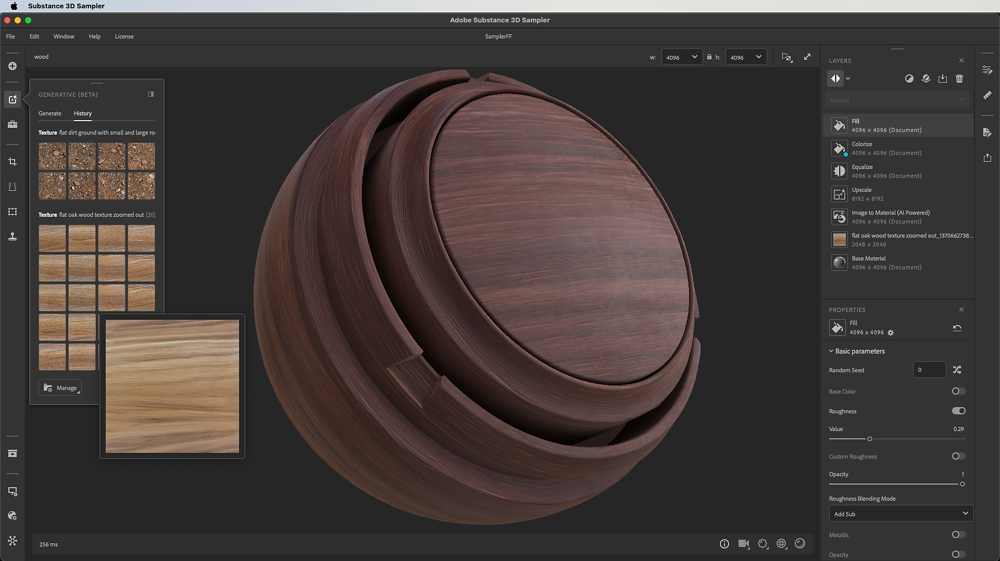

This page regroups all the Betas versions of Substance 3D Sampler. To know How to acces the Beta you can go to our FAQ page.
We're introducing Text to Texture powered by Adobe Firefly, a new way for artists to source texture imagery using only a description. This new feature expands the artist toolbox beyond importing custom or stock photography by providing a way to generate textures right within Sampler. All Text to Texture images are square and tileable with proper perspective, ready for the material-creation workflow.

4.4.1 Beta Fondue
(Released: 9 April 2024)
Fixed:
4.4.0 Beta Fondue
(Released: 18 March 2024)
Added: